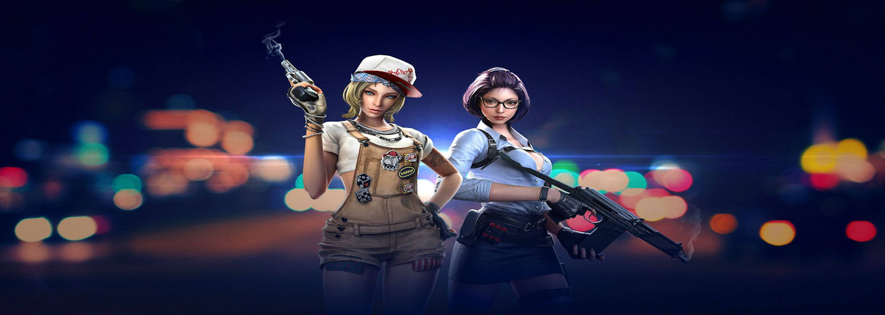
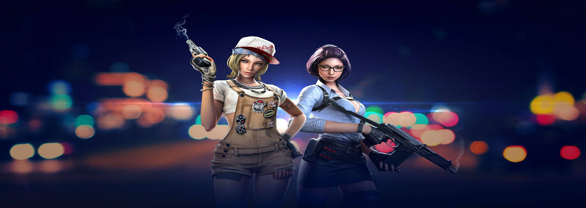

CROSSFIRE
MERCENARY FORCES CORPORATION
CREATOR'S CONTACT INFO
Louie Jay R Villaver
RyuDG_jr
SFIVl0uj

 

TIPS
These are basic skills that people should know, knowing these will help you in game.
- Burst Fire (Tap Fire) - This is where you tap your mouse so that your gun only fires 1-3 shots. This helps alot when your trying to hit somebody far away.
Aiming Head Level - Instead of putting your crosshair where another persons body is, try getting used to putting it about head level, that way when u come across an enemy you can burst fire and take off his head. This helps alot if your camping and 2+ guys come out of a door your watching.
Look & Listen! - (if you learn this then noobs will think your chamming/walling) Look for signs of your enemy, if you see bullet holes, a nades black spot on the floor, smoke, or even a bullets tracer will help alot. Mix that with listening to footsteps, grunts, breath, bullets, gunshots and you can track your enemy down easily. Learn the different sounds that the different floors make. Metal, sand, wood, stone, etc.
Walk - If you hear or see and signs of your enemy and you don't think they know your coming, then walk, they won't hear you and you can surprise them with a few bullets up the a**. This also helps if your the last one alive and there's still a few other people on the other team.
Don't get cooky - Just because your doing really good doesn't mean you should let up a little. If you ease up and you start to do bad, you might not be able to get back into your groove. If somebody is afk don't knife them, just shoot them quick and finish it, you never know when they might come back or if there's another enemy nearby, or if your teammate killsteals you.
Use common sense - This is probably the most important thing to learn. If your trying to find the last person and your walking in circles, then turn around and go back the way you came, maybe he/she is walking the same direction but on the other side of the map. Check common hiding spots, you never know which hiding spot a camper will be in, so Check Them All. Try to think like the other person, if you were them where would u hide? Where would you rush? where would you retreat to?
Good Gamesmanship - Don't be an a**hole. If somebody kills you don't start crying out "hacks", "chammer", "noob". Just let it go and continue playing. If your winning by a lot, don't start gloating. If somebody accuses you of hacking, just tell them to report you and stop spamming the chat with accusations.
Guide on How to Use AK-47.
The AK-47 is typically the most powerful rifle in CrossFire's line of Rifles. 2nd is the AR-70, 3rd is the Scar-H, 4th is the QBZ-95 and 5th is the Scarlight.
Moving on. The 5 Ws of the AK-47:
- WHAT is the use of this gun.
- WHO can use this gun.
- WHERE to use this gun.
- WHEN to use this gun.
- WHY use this gun.
>WHAT IS THE USE OF THIS GUN?
This gun is designed for all kinds of rifle users. If you are a rusher type, you can basically use the spray tactic. For mid/long range players, the high damage is good for long range death. But the problem is that you need to tame the beastly recoil of this gun. Once you do, you can become a deadly AK handler.
WHO CAN USE THIS GUN?
It is designed for everybody, which means all can use it. Whether you are a rusher type, burst type, or any other kinds of rifle handlers out there. The AK is definitely for you. But because of the high recoil, you may regret buying one. (Note: after reading this guide and you understand everything, you can now stick to your AK-47 and do some badass kills.)
WHERE TO USE THIS GUN?
For beginners, it's good you start off in small maps. Prolly Destruction mode maps like Mexico and Eagle eye. Then if you improved your skills in controlling recoil and bursting in mid ranges, you can move in to medium sized maps like Factory, Sub Base and Castle.
WHEN TO USE THIS GUN?
For now... It is best used in times you hate your current gun.
WHY USE THIS GUN?
Is it because it makes you look like a pro? No. It makes you one.
HOW TO USE IT?
Now this is the tricky part. You would certainly require these to practice.
An AK-47 (the original one), a comfortable mouse (any dpi rate will do), low mouse sensitivity (but you can adjust how low it is for you to feel comfortable), Low mouse sensitivity (but you can adjust how low it is for you to feel comfortable), a buddy (or a dummy CF account) and finaly, Destruction Mode, Free For All or Team Deathmatch (the map should be Black Widow.)
First, Empty one mag of AK-47 on the wall. Spray it without moving your mouse. Just hold LMB (Left Mouse Button). The spray pattern usually looks like a "7" sign, Sometimes it's inverted, sometimes it looks like a "T", Now after spraying one mag. Try to control the recoil by maintaining all bullets to form one small circle. Spraying while moving is one of the hardest tactics to do in the AK-47. In short, you will kill multiple targets in a wide area by spraying. If you can't control the beastly recoil of this gun, crouching is okay as long as you do the tap-crouch method. Simply do some bursts then tap ctrl, then tap LMB 2-3 times (it's better if you have the x2 function in your mouse.) Keep doing this until the spray pattern will appear (not)
Guide on How to Use Some Melee Weapons (Useful on some Game Modes -> Melee Only).
KNIFE
- If you can't be targeted, keep an eye on your adversary because practically all axe users are still travelling diagonally. Axe users occasionally jump; if you notice that his/her technique is all direct contact, try to jump kill; it is more effective if you aim the knife lower and away from the opponent's face. When you encounter an axe user, let him/her attack first to avoid falling into his/her trap. Aggressive Axe-User will always attack first and then take defensive measures, to get the axe-user to keep away from you, first turn around, right-click, and then dash to the head. Next, turn the person into a corner and stab them in the head. When an axe user is left alone, he/she occasionally pursues. If you're alone, keep some space and then headshot him/her if you can; if you're with someone, make sure you're with him/her... or them; and when you're alone, remain far away because you might be in a rush. You can punch him harder if you rush to corner him and hit him at the same moment. stumbled into a "Naughty Axe-User"? Such an axe-user simply loiters and strikes when necessary. You should hold him/her still and then stab him/her. You should always give priority to the best axe user before the others because if he is gone, your chances of victory are quite great. Axe users with reputations like 2 bar and 1 bar are feared differently, therefore occasionally they die in the run.
COMBAT AXE
- Knife users should only take one hit because once they hit you, they won't let you escape. If the opponent is also an axe user, you must left-click a great distance away and keep your head up at all times. Many axe users become the targets of a series of attacks by opponents, whereas many knife users enjoy pinching so you always jump backwards or bunny hop. If you know there are many, you should bring them together and stop chasing!
In Ordinary mode, (Mostly Destruction Mode and Team Deathmatch), desperate gamers attempted to kill with a knife are as follows:
- If the enemy is facing them, they can kill them with a knife.
- When an adversary reloads, they try to murder them in one blow with a knife or an axe.
- Trying to execute Ambush Knifing carefully or they're will be in trouble.
Guide on How to Use a Sniper Rifle.
- 1. SETTINGS
The first step to sniping is learning what settings are appropriate for you. When choosing settings you must 4 remember things.
Make sure you can move your sniper to a target while not in scope.
Make sure you can move your sniper to a target while in scope.
Make sure you wont be moving your sniper over and past the target.
Make sure your pistol and/or rifle you pick up is able to move to your target quickly but accurately.
Your sensitivity must be high enough to be able to move to the target, yet low enough to pick off heads. Here are the Recommended Settings for it:
(but for some cases it really depends on what kind of sniper rifle you are using.)
Regular: 35
Zoom: 12
2. MOVING
Ah yes the dasshingly MOVING. For this I recommend a pistol (I prefer COP 367, any variant) so that you can run quickly and still be able to gun. Moving + Sniping is possible, however your just to slow. Why is a knife not good? Imagine your running to A site to defuse the bomb. Someone is camping a corner and sprays as you come around. Unless the guy completely fails, your dead.
3. TECHNIQUES
There are some different techniques to sniping and to be a good sniper, one must have them all at the player's disposal.
FLICK-SHOTTING(DRAG-SHOTTING): Where when you scope in and the cross hair isn't on the enemy. You must drag the scope cross hair to the enemy. I usually do this by moving my hand fast? Some people may flick their wrist, but I find that sometimes that hurts and isn't usually accurate. NOTE: Do not follow someone running while in scope. If this happens take your chances with a flick ahead of them.
PRE-AIMING: Aiming at the place the enemy is going to come from before they do. Get good cover so that people cant shoot you from somewhere else. Reactions are everything in killing someone through this. Usually defensive technique.
PEEKING: Stick out a bit>aiming>scope in>shoot>pull back in. This is usually done very fast so that enemy snipers cannot pick u off. This is a good technique to use for offense or defense because you do not get exposed as much.
QUICK-SCOPE: Quick-scope consists of [moving to the not scoped in>scoping>fire] all very quickly (of course). The most advanced technique and when couple with as much peeking as possible creates a "pro" sniper.
But why no jump shooting? I consider jump shooting a bad habit and I don't recommend it at all. While I have seen and tried jump shooting it works only up to an extent. Jump + shooting usually leaves you hanging in there where you cant move if there are five people in your face, however peeking allows you too (jumping around corners). Also, if your jumping + shooting with another sniper on a flat surface, i'd just pull out a pistol and kill him. But, the technique throws people off and sometimes its an unexpected surprise. So, use it sparingly.
4. QUICK-SWITCH
Quick-switch is a way to get out of scope without having to right click twice and possible saving your life. The following methods are listed below:
Q + Q: clicking Q to switch to pistol/knife/grenade/bomb then Q to switch back to sniper
2/3/4/5 + Q: clicking 2/3/4/5 to switch to pistol/knife/grenade/bomb respectively then Q to switch back to sniper.
SCROLL UP + SCROLL DOWN (OR VICE VERSA): scroll up/scroll down to switch to pistol/grenade/bomb then the opposite to switch back to sniper.
HOLDING THE SCOPE: It is where you hold down left key so that it stays out of scope after you shot and then when you release left key the scope returns. So, why use this method? Because if you get in the habit of switching to say pistol, then if you miss your shot you can pistol the opponent to death. That brings me to my second point why Q+Q(first Q to pistol); 2+Q; and Scroll up + Scroll down > other methods. A pistol can kill someone close or far effectively.
5. ACCURACY
I will now give you a run down of the accuracies of certain situations (AWM was used).
STANDING STILL: 100% Spot on accuracy.
MOVING [<,>]: Expect the bullet to be directly behind the crosshair.
JUMPING and NO-SCOPE: You cannot predict where the bullet is going and if it hits the enemy, it's just PURELY luck.
TIPS ON SOME GAME MODES
GHOST MODE
- WEAPONS:
The XM Shotgun and the M60 are the 2 best weapons for this mode.
TACTICS:
Camp: find a nice high safe spot where you can see everything around you. You will want to be in a corner so no-one can sneak up behind you.
Rush: Just run out and shoot at anything that you think is moving. M60 is a great gun for this because of its large ammo capacity.
Group: Stick together with your teammates and pick off kills along the way
Spotter: Dont even look for ghosts, just go around spraying common spots and trying to find them
Base Camping: Camp at either one of the sites and wait... they have to plant sometime
Water Watching: it means what it says, just watch the water (if there is any) for any sign of footsteps
TRICKS:
When shooting at ghosts try to anticipate their dodging movements. Also keep moving at all times. Never be a stationary target for the ghosts. Use narrow places and water to detect movement. Get earphones and use grenades to your advantage. Always spray around and near the C4, many ghosts just stand there after its planted. SPRAY ALL CORNERS! this is the mistake most ghosts make, they hide in corners when the safest place is probably open area. If you hear beeping of the C4 being set try and locate it and spray like crazy. If you are getting overrun by ghosts my best advice would be to run straight back at them and spray like hell, this usually confuses them and breaks up there attack into more manageable numbers.
ZOMBIE MODE
- Zombie description:
Main zombes are red, there bigger and fatter then normal. The main zombies have these claw things on there back. they got 5,000 HP so beware.
Secondary Zombies- Same thing except they have tube things on there back and they got 2,000 HP.
They give you 20 seconds to prepare for the infection so make use. There are 2 ways you can use your 20 seconds wisely.
1. Wait it out - This may seem stupid but its really smart. Ususally people will bunch up in groups too early and if one of them are infected they infect the whole group. So hide away from people and wait to see who gets infected and who doesnt, so you know who to group up with.
2. Glitch - Yes 20 seconds is plenty of time to boost your fellow teamates up to high spots or just plain glitch into areas. 13 zone is good for boosting since u cna boost up to the high areas and interest is good cuz u can jump on the lamp posts and u'll outlast your teamates and the zombies for a while.
Weapons:
Bringing the wrong weapons to zombie mode is stupid. Best weapon for the situation is M60 ADV with 150/300 Ammo. it only costs 59,000 GP. Dont bring a shotty, weapons taht have low ammo such as the Kriss super v or the uzi, bring the golden M4 because its accurate and it has more ammo than regular M4. Any other weapon is fine really. I reccomend getting an AWM and camping on the high spots in 13 zone unless they group up which is a good time to whip out using an D. Eagle and not Anaconda.